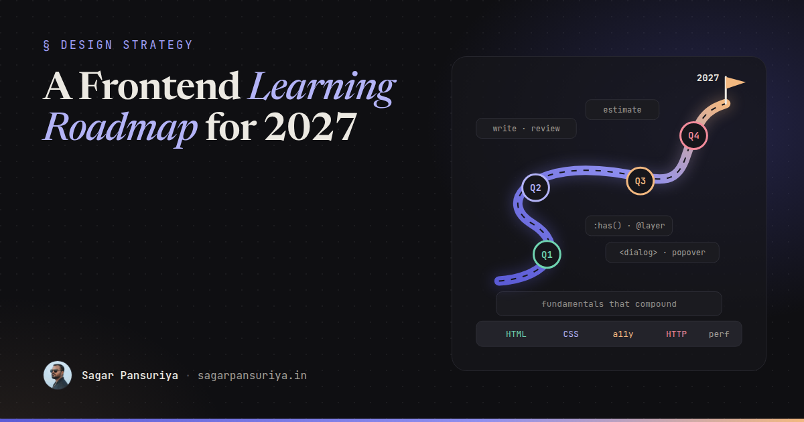
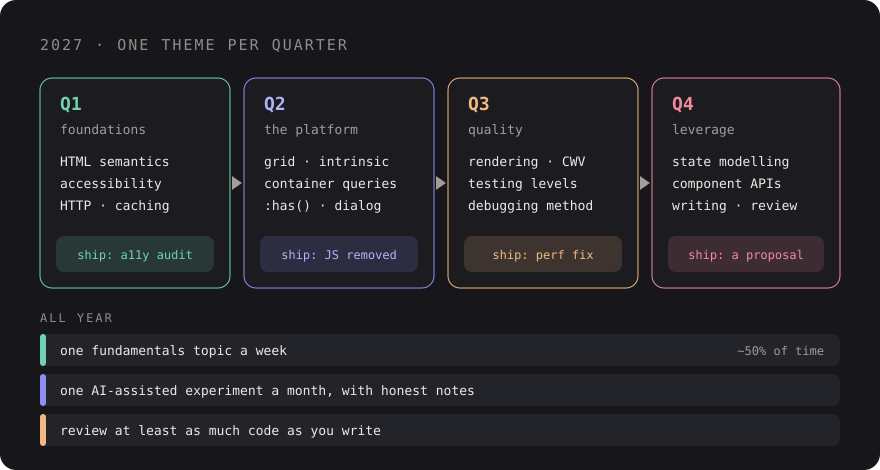

A Frontend Developer's Learning Roadmap for 2027


Every December the same kind of list does the rounds: forty technologies to learn next year, each with a logo, most of which you'll never use at work. Picture a developer who works through one of those lists diligently. By December they've done six tutorials, finished none of the projects, and still reach for a JavaScript library to build a tooltip.
This isn't that list. It's the roadmap I'd give someone on my team for 2027: a developer with a year or more of experience who wants to get properly good, not just busy. It's opinionated, it's biased towards skills that keep paying off regardless of which framework wins, and it says nothing about what the industry will look like in twelve months, because I don't know and neither does anyone else.
The principle: learn things with a long half-life
Some knowledge decays fast. A framework's API, a build tool's config format, this year's state management
library. Some barely decays at all. How the cascade works, what a <button> gives you for free,
what happens between typing a URL and seeing pixels. The second kind compounds: every year of it makes every
framework you touch easier.
So the roadmap is weighted accordingly. Roughly half your learning time on fundamentals, a quarter on platform features, and the rest split across tools, AI and the non-code skills that decide how far you go.
Fundamentals that compound
HTML semantics
Most developers think they know HTML. Few can tell you when to use <section> versus
<article>, what a <label> actually does for a checkbox, or why a clickable
<div> is broken in several ways at once. Semantic HTML is the cheapest accessibility,
SEO and maintainability win there is. Read the MDN pages for the elements you use every day. You'll find
something new in most of them.
CSS layout
Flexbox and grid well enough to build any layout without trial and error. Intrinsic sizing
(min-content, max-content, fit-content), minmax(),
logical properties, how percentage heights resolve, stacking contexts and why your z-index: 9999
didn't work. If you use Tailwind, this matters more, not less: utility classes are a thin layer over exactly
these concepts.
Accessibility
Not the rules, the practice. Can you use your own app with only a keyboard? Have you listened to it with a screen reader? Do you know when ARIA helps and when it makes things worse? Start with a regular habit: a short audit of whatever you shipped this week. I described a 30-minute version in a 30-minute accessibility audit.
HTTP and the network
Status codes you'd pick without looking up, caching headers (Cache-Control, ETag),
cookies and their attributes, CORS and why it exists, what a preflight is, how redirects affect performance.
Frontend bugs are often network bugs in disguise, and this is the knowledge that lets you tell the difference.
Browser performance
How the browser turns HTML, CSS and JavaScript into pixels: parsing, style, layout, paint, composite. What a long task is. Why the Core Web Vitals (LCP, INP, CLS) measure what they measure. How to read a DevTools Performance trace without panicking. Once you understand the pipeline, most performance advice stops being a list of tricks and starts being obvious.
Platform features worth learning now
A lot of what we used to reach for JavaScript for is now built into the platform. These are the ones I think repay the time. Support varies, so check each one's Baseline status on MDN before using it in production.
- Container queries: components that respond to their container, not the viewport. This changes how you design component libraries.
:has(): styling a parent based on its children. It removes a surprising amount of state-toggling JavaScript.- Cascade layers (
@layer): control specificity at the architecture level, especially useful when mixing a framework with your own CSS. - Native
<dialog>and the Popover API: modals, menus and tooltips with focus handling and top-layer rendering you don't have to build yourself. - View transitions: animated state and page changes with very little code.
- Modern colour:
oklch(),color-mix()andlight-dark()for theming that's easier to reason about. - Scroll-driven animations and anchor positioning: worth understanding now, with a careful eye on browser support and fallbacks.
The trick is to learn each one by replacing something you already have. Swap one JavaScript modal for
<dialog>. Rewrite one media-query-heavy card with container queries. You'll learn the edges
of the feature much faster than from a demo.
Framework-agnostic skills
Whether you work in Livewire, React, Vue or plain Blade, these transfer:
- State modelling. Where does this state live: server, URL, component, a shared store? Most messy frontends are messy because nobody asked that question.
- Component API design. Props, slots, variants, sensible defaults. The difference between a component people reuse and one they copy and modify.
- Testing at the right level. Knowing when a unit test, a component test or a browser test gives you confidence per minute spent.
- Debugging. A method, not luck: reproduce, isolate, form a hypothesis, check it. DevTools beyond the Elements panel.
- Reading source code. When the docs run out, open the library and read it. This is the skill that most clearly separates mid-level from senior developers I've worked with.
Working with AI tools
AI assistants are part of the job now, and using them well is a skill worth practising deliberately. Learn to give them good context, to break work into small verifiable tasks, and above all to review what they produce as critically as a colleague's pull request.
But be careful with the learning itself. If an assistant writes every CSS layout for you, you won't learn CSS layout. My suggestion: for anything on this roadmap, write the first version yourself, then ask AI to review it, explain alternatives, or find the edge case you missed. You get the speed without skipping the understanding. I wrote more about where these tools help and where they don't in where AI actually helps in frontend work.
The skills nobody puts on a roadmap
Writing
PR descriptions that explain why. Tickets that someone else can pick up. A short proposal that gets a decision made in one meeting instead of three. As you get more senior, more of your impact comes through writing, and it's a skill you can practise every day at work.
Reviewing
Reviewing code is how you learn a codebase and how you teach one. Aim to review at least as much as you write. Be specific, explain your reasoning, and separate "must fix" from "consider".
Estimating
Nobody estimates well, but some people estimate usefully. Break work down until each piece is small, name the unknowns out loud, give ranges instead of single numbers, and compare your estimates to reality afterwards. That last step is the one almost everyone skips, and it's the only one that makes you better.
A quarter-by-quarter plan
A year is too long to plan in detail and too short to learn everything. Four themes, one per quarter, each ending with something you've shipped or written.

| Quarter | Focus | Finish with |
|---|---|---|
| Q1 | HTML semantics, accessibility, HTTP basics | A keyboard and screen reader audit of a real feature, with fixes merged |
| Q2 | CSS layout, container queries, :has(), <dialog>, popovers | One component rebuilt with platform features, replacing JavaScript |
| Q3 | Browser performance, testing, debugging | A performance trace of a slow page, a fix, and before/after numbers |
| Q4 | State and component design, writing, reviewing | A written proposal or internal doc, and a quarter of thoughtful reviews |
Running through all four quarters: one small AI-assisted experiment a month (with honest notes on what worked), regular code reviews, and one fundamentals topic a week, even if it's just reading one MDN page properly.
Some practical rules for making it stick:
- Tie learning to work. Pick themes that match what your team is building. Learning that ships gets remembered.
- Protect a small, regular slot. Two focused hours a week beats a heroic weekend once a quarter.
- Produce something every quarter. A PR, a short internal write-up, a demo at team meeting. Output is how you find out what you actually understood.
- Tell your lead. A good tech lead will steer tasks your way that fit the theme. I always try to.
- Drop what isn't working. If a theme turns out to be irrelevant to your work, swap it. The plan serves you, not the other way round.
The short version
- Spend most of your time on things with a long half-life: HTML, CSS, accessibility, HTTP, performance.
- Learn platform features by replacing JavaScript you already have.
- Build skills that survive framework changes: state modelling, component design, debugging, reading source.
- Use AI to go faster, not to skip understanding.
- Practise writing, reviewing and estimating as deliberately as code.
- One theme per quarter, each ending with something shipped.
None of this will trend on social media. But a year from now, you'll be the person on the team who knows why things work, and that's the developer every team wants, whatever the stack looks like by then.
Discussion